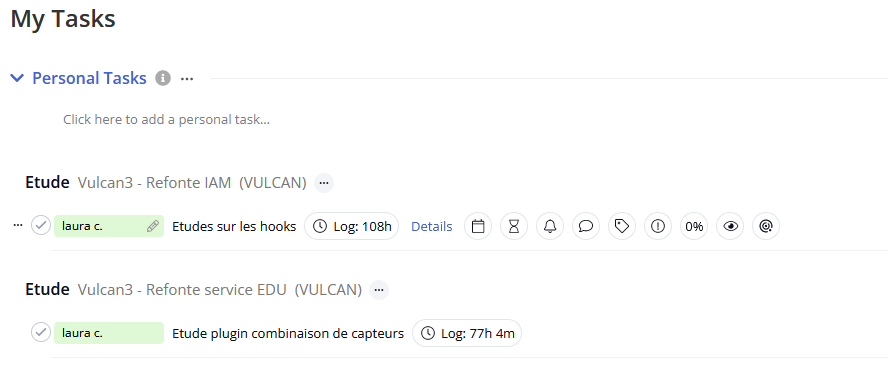
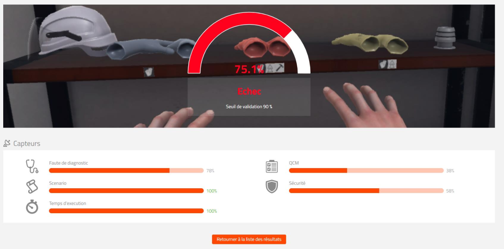
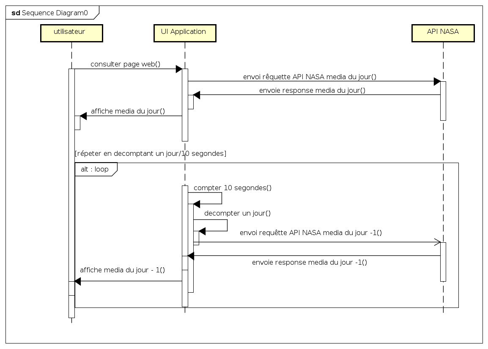

1. Introduction
1.1. Résumé du projet
Dans le cadre de ma formation préalable au passage du titre de Développeur et Concepteur d’Application j’ai effectué un stage au sein de la société Mimbus.
Cette entreprise fait de simulateurs de réalité virtuelle pour l’apprentissage des gestes manuels. Mimbus offre aux professionnels de la formation de moyens technologiques de dernière actualité et compte avec plusieurs simulateurs d’apprentissage développés sur un environnement 3D.
Ces solutions logiciel répondent à différents métiers tels que la peinture de carrosserie, la menuiserie, la construction, la soudure, entre autres. Ma participation chez Mimbus est liée à l’assistant de formation Vulcan, outils créés pour les utilisateurs de simulateurs. Pour le formateur, Vulcan fonctionne comme interface de gestion des classes, des parcours d’apprentissage et de stockage de donnée tel que le résultat des exercices et l’avancement des élèves.
Vulcan expérimente un changement major en allant vers une nouvelle version. La solution en place est la version 2. L’application mise en place présente de lourdes dettes logiciel. Cela compromet parfois le fonctionnement de l’assistant et ne permet pas de faire évoluer Vulcan qui devrait faire face à des fonctionnalités très spécifiques dans l’avenir. Mimbus développe Vulcan 3 qui sera une version plus stable, plus extensible et plus adaptée aux besoins actuels de Mimbus.
C’est opportunité professionnel a été très complète et m’a permit de travailler autant sur le front-end que sur le back-end, anssi que sur la conception. J’ai utilisé mes connaissances en React Js pour le développement du front-end. J’ai participé à la refonte back-end en reportant du code c# depuis le code actuel Java, travaillant sur le composant d’accès aux données liés aux simulateurs. Et finalement, j’ai mené une étude de conception au sujet de l’utilisation des plugins pour faire évoluer Vulcan avec des parties des codes indépendantes du core du système.
Cette expérience a été intense et riche en tant que développeur et concepteur au sein de cette intéressante start-up Toulousaine. Je vais m’efforcer de vous raconter comment ça a été précieux pour moi et pour mon avenir professionnel.
2. Liste des compétences du référentiel qui sont couvertes par le projet
| CCP1 : Concevoir et développer des composants d’interface utilisateur en intégrant les recommandations de sécurité |
|---|
Maquetter une application (obligatoire) |
Développer une interface utilisateur de type desktop |
Développer des composants d’accès aux données (obligatoire) |
Développer la partie front-end d’une interface utilisateur web (obligatoire) |
Développer la partie back-end d’une interface utilisateur web (obligatoire) |
| CCP2 : Concevoir et développer la persistance des données en intégrant les recommandations de sécurité |
|---|
Concevoir une base de données |
Mettre en place une base de données (obligatoire) |
Développer des composants dans le langage d’une base de données |
| CCP3 : Concevoir et développer une application multicouche répartie en intégrant les recommandations de sécurité |
|---|
Collaborer à la gestion d’un projet informatique et à l’organisation de l’environnement de développement |
Concevoir une application (obligatoire) |
Développer des composants métier (obligatoire) |
Construire une application organisée en couches (obligatoire) |
Développer une application mobile |
Préparer et exécuter les plans de tests d’une application |
Préparer et exécuter le déploiement d’une application |
3. Expression des besoins du projet
Le projet Vulcan 3 est un projet de refonte de son prédécesseur Vulcan 2. Ce dernière est un système déjà opérationnel et fonctionne comme plateforme numérique pour piloter des simulateurs dédiés à l’apprentissage du geste professionnel sur un environnement 3D.
Vulcan travaille comme un véritable assistant des formateurs et utilisateurs des différents simulateurs de Mimbus.
-
Vulcan permet le paramétrage rapide et simple des parcours de formations (choix de différents exercices à effectuer par une classe).
-
Vulcan analyse en temps réel les performances des élèves durant l’exécution d’un exercice.
-
Vulcan permet la gestion des groupes de travail, des élèves, des ressources assignées à chaque classe.
Cette version du logiciel est devenue difficile à gérer par les équipes de développeurs à cause des besoins spécifiques et grandissants de la société Mimbus qui veut consolider son implication technologique au service de la formation professionnelle.
4. Gestion de projet (planning et suivi, environnement humain et technique, objectifs de qualité)
4.1. Équipe Mimbus
Mimbus est une start-up du bassin toulousaine. Avec un effectif d’une vingtaine de personnes, la taille humaine de l’entreprise permet au quotidien de maintenir une communication fluide entre les différents services.
Direction générale
L’équipe de direction générale est représentée par Mr Da Dalto Laurent, PDG de la société et moteur du projet qu’a vu le jour en 2011. Mme Fenollar est son assistante de direction.
Équipe commerciale
Aurélie Abdiche est la responsable de l’équipe commercial. Avec Sarah MIRALLES et Javier Serna constituent la force de vente de Mimbus.
Équipe commerciale export
Mimbus a exporté ses produits à l’international et possède une antenne en Amérique du Nord, à Chicago. Sébastien Bru est à la tête des services sur ce pays.
Communication et Marketing
L’effort de marketing et communication est développé par Emilie Christe, responsable de l’équipe et Quentin Jordahn, conseiller en psychologie.
Équipe IT et support téchnique
Renaud Bosquet est directeur du support technique et responsable de l’IT, avec Mathias Foix et Ian Murray offrent le support aux clients et sont responsables de la gestion des équipements.
Équipe de dévoleppement simulation 3D
Nicolas Lefevre est le responsable Projet XR. Cette équipe possède 3 collaborateurs : Mary Kita, infographiste 3D, et Pierre Guerineau et Nicolas Crockey comme développeur C#/Unity/VR.
Équipe Vulcan
Sébastien Philippot est à la tête de l’équipe de développement de Vulcan. Architecte logiciel avec plusieurs années d’expérience a été le référent de mon stage. En effet c’est dans cette équipe que j’ai eu l’occasion de collaborer pendant cette période.
J’ai travaillé à côté de quatre autres développeurs.
Michal est mon collège de formation à LDNR et a effectué également son stage à Mimbus. Il a effectué une étude sur l’utilisation de l’intelligence artificielle dans le projet.
Bastien et Quentin ont aussi fait parti de LDNR où se sont formés en alternance. Ils avaient travaillé sur Vulcan depuis plusieurs mois déjà à mon arrivée. Tous les deux ont participé au début de la construction du nouveau Vulcan travaillant dans la conception et développement de la partie back-end. Ils ont été incorporés à l’entreprise définitivement après leur alternance.
Bastien a commencé aussi la refonte du front-end conjointement avec Kevin Nguyen, développeur plus expérimenté qui travaille également avec l’équipe de VR.
4.2. Environnement technique
-
Mimbus 2 a été codé avec l’utilisation de Java EE. Dans Mimbus 3 le choix du langage C# a été fait afin de pouvoir capitaliser les efforts communs. En effet, les développeurs des simulateurs utilisent C# avec le moteur graphique Unity. Le fait d’utiliser les mêmes langages de programmation permet une meilleure interaction entre les équipes de développement et une meilleure optimisation de compétences globales.
-
Plataformes Azure Microsoft
Mimbus utilise la plateforme applicative Azure, le nuage de Microsoft. Cette offre d’informatique leur permet d’avoir accès à multiples services qui vont faciliter le déploiement de l’infrastructure de l’entreprise, l’hébergement de leurs applications et le stockage des données, par exemple. L’utilisation de Azure permet d’employer les moyens nécessaires sur demande et d’apporter une grande flexibilité dans leur utilisation. Azure offre un baste catalogue de services pilotés de manière centralisée. Je vais parler de certains de ces services par la suite.-
Microsoft Meet
Nous utilisions Microsoft Meet comme application de communication collaborative. -
Azure DevOpos
Nous utilisions Azure DevOps pour héberger les dépôts git. Pendant mon stage j’ai créé deux POCs (Proof Of Concept) pour réaliser des cas pratiques qui appuyaient mes recherches d’information sur les hooks de React et l’utilisation de l’architecture plugin avec .Net.
-
4.3. Planning et suivi, objectifs de qualité
Le suivi du projet s’effectue également à partir de technologies Microsoft, concrètement Teamworks.
J’ai tenu un registre des heures utilisées sur mes différentes tâches. J’effectué trois tâches principales:
-
Étude et développement de React en utilisant Redux et en priorisant les hooks avec codage d’une partie de l’interface utilisateur centrée sur les organisations appartenant à Vulcan.
-
Codage de Dto simulateur depuis la version précédente développée en Java.
-
Étude de conception et POC au sujet de l’utilisation des l’architecture plugins.

Des tâches étaient assignées par notre chez d’équipe. Nous avions de réunion tout les jours pour communiquer nos avancements et faire part, éventuellement, des problèmes rencontrés au sein de l’équipe de développement Vulcan. Nous échangions également avec l’équipe de développement des simulateurs. Une réunion par semaine avait lieu chaque lundi pour se mettre au courant des tous les projets en cours de Mimbus.
L’équipe de Mimbus n’utilise pas les méthodes agiles. Le choix de planifier une livraison complète de la nouvelle version de Vulcan était fait depuis le début donc, le choix d’une méthode en cascade était privilégié.
Néanmoins, j’ai pu observer certaines manières de fonctionner en agilité si je peux me permettre de faire la comparaison. Le stand-up meeting effectué tous les jours ou le fait de désigner une personne pour représenter le produit Vulcan et faire le pont entre les différents services (figure de product owner). Je n’ai pas pu éviter de faire de comparaisons avec ma dernière expérience dans une équipe qui travaille en agile, méthode scrum. Ici l’organisation était moins standardisée, notamment, avec l’absence des sprints, mais présente des traits d’agilité. La petite taille des équipes et la nature interne du projet permettaient d’adapter les dates de livraison et des adoptés des nouvelles exigences.
5. Spécifications fonctionnelles du projet
5.1. Reproductions des fonctionnalités de Mimbus 2
-
Le client envoie une demande de devis à partir d’une page de contact qui expose les différentes offres d’abonnements. En réponse Mimbus envoie un devis correspondant au client.
-
Gestion des organisations par l’administrateur désigné par les services commerciaux de Vulcan après la conclusion de la négociation. Les gestionnaires client peuvent lister les organisations, peuvent éditer leurs caractéristiques, demander la suppression ou la création des nouvelles.
-
Mimbus donne accès à la gestion des licences. Le gestionnaire peut affecter aux organisations les licences activées suite à leur achat. Les gestionnaires pouvant utiliser leur licence seulement après activation. Les licences concernent les simulateurs.
Vulcan est un LMS (learning management system), un système de gestion de contenu de nature pédagogique. À partir de cette interface web, le maitre formateur peut gérer les apprentis qui sont sous sa tutelle.
Le formateur va pouvoir affecter des élèves à une classe et les inscrire dans des parcours pédagogiques. Il va pouvoir également retirer des apprenants d’une classe.
Les parcours pédagogiques sont composés d’une suite d’exercice.
La combinaison d’exercices est proposée par Vulcan à partir de la licence du simulateur. Les changements sur le parcours sont possibles, mais il faut effectuer une copie du parcours native pour pouvoir l’éditer.
Une autre fonctionnalité principale de Vulcan est d’afficher les résultats correspondants à un exercice. Le score de l’étudiant peut conditionner le passage aux exercices suivant.
Vulcan va afficher les résultats qui pourront être consultés par l’enseignant et l’élève afin de permettre à ce dernier de s’améliorer et d’avancer dans sa formation.

!!! Securitée avec l’utilisation de Keycloak
5.2. Nouvelles fonctionnalitées sur Mimbus 3
5.2.1. Système de licenses
Les licences sur Vulcan 2 étaient attribuées par une procédure complexe posant parfois de sérieux problèmes. C’était difficile à gérer et cela bloquait parfois l’utilisation des simulateurs. Les licences étaient nécessaires pour l’utilisation des simulateurs et elles étaient conditionnées à une limite de temps donné.
Avec Vulcan 3 la stratégie commerciale a changé. Le payement d’un abonnement n’est plus nécessaire pour utiliser Vulcan, mais sa suscription permet d’accéder à certaines fonctionnalités dites exclusives.
On peut faire la différence de cette manière entre un fonctionnement basique et stable assuré par Mimbus, inclus avec l’achat des simulateurs et un service supplémentaire plus adapté au besoin du client. L’utilisation des plugins va être le moyen de proposer de services spécifiques. Je vais m’étendre au sujet de l’utilisation de plugins. Une étude de conception était nécessaire pour trouver de voies pour mettre en place cette nouvelle structure et a constitué une de mes tâches principales pendant mon stage.

!!! ??? posibilité de créér des parcours custom
6. Spécifications techniques du projet, élaborées par le candidat, y compris pour la sécurité
J’ai débuté mon activité chez Mimbus effectuant une campagne de test fonctionnel conçues avec TestLink. Cela m’a permis de commencer à comprendre les fonctionnements de Vulcan. Un exemple de test était d’envoyer une invitation à un nouvel élève avec le rôle de formateur. La procédure était détaillée et je devais signaler si le logiciel répondait comme attendu et noter les dysfonctionnements.
Autre chose qui m’a permis de découvrir le métier de Mimbus, mon premier jour de stage, était d’effectuer un exercice avec le simulateur SimSpray qui permet de s’entraîner à peindre la carrosserie d’une voiture. Cette fois, je me suis mise à la place d’un utilisateur avec un rôle d’apprentie. Céla m’a permit de comprendre la grand utilité de simulateurs comme outils d’apprentisage: simulation réel de la situation de travail, economie des fournitures, correction en temps réel du geste, autoévaluation, entre d’autres.
6.1. Front-end
Le front de Vulcan est développé avec React JS. Cette librerie javascript, développée par Facebook en 2013, permet de créer des interfaces utilisateurs hautement personnalisables et interactives. L’interface codé en React est constitué de plusieurs éléments qu’on nomme composants. Les composants vous permettent de découper l’interface utilisateur en éléments indépendants et réutilisables, vous permettant ainsi de considérer chaque élément de manière isolée. Ces composants affichent ansi des parties de la vue et peuvent beneficier d’un état local. Quand l’état local change le composant rende un nouveau affichage sans avoir à refrechir toute la page.
Le front-end de Vulcan 3 allait changer peu par rapport à Vulcan 2 au niveau du design.
La première version utilisait la librairie Ant Design dans son ancienne version. Ant Design est un design system web basé spécifiquement sur la bibliothèque React JS. Ce bibliothèque de composants permet l’utilisation de code prêt à l’emploi pour construir l’interface utilisateur. Ant Design permet de construire les page web à partir d’un système de grille simple et puissant.
Dans la nouvelle version de Vulcan on devait utiliser les composants mis à jour dans la dernière version de Ant Design en essayant de respecter le design de Vulcan2.
Quand j’a demarré ma tâche sur le front-end Mimbus devait prendre des décitions au sujet du desing. Notre équipe de développeur devait concentrer ses efforts de travail à implementer des fonctionnalités sans se soucier de l’aspect graphique.
Pour évoluers à la paire du back-end la question de l’utilisation de dernières technologies React a été lancé. Devions-nous utiliser les hooks de React ? L’utilisation de hooks était possible et quel bénefif trouvions-nous à les utiliser ?
C’est à partir de ces question que mon travail sur le front-end a débuté. Je connaisais la technologie React que j’avais apris auparevent dans le cadre d’un stage précédent. Pour me remettre à l’utilisation de React et commencer à investiger sur l’utilisation des hooks je devais effectuer un serie de POCs.
Le POC, Proof of Concept, ou preuve de concept en français, est une méthode qui permet d’évaluer la faisabilité d’un projet. J’ai commencé par créer une petite application react où la finalité été de réaliser des rêquettes, moyanant une Api, dans des intervales de temps fixés.
Dans l’enssemble, ce poc devait me permettre de prendre la main sur react et pouvait aider à concevoir un futur système d’envoie de notifications qui devait vérifier l’existance de messages provenant de la boîte de réception du formateur.
Pour developpeur ce POC j’au utilisé la API de la nasa.
Une API (aplication programing interface) est un interface de comunication entre programmes informatiques. On pourrait comparer une API à une bibliothèque de fonctions mises à disposition des développeurs, qui vont permettre à ces derniers d’écrire un programme capable d’interagir avec le programme pour lequel la bibliothèque a été créée.
L’API de la nasa met à dispositions une serie des URI (Unified Resource Identifier), des identificateurs des ressources, qu’on peut utiliser pour créer des nouvelles applications.
Dans ce cas crocret que je vous presente à continuation, mon application effectue une requêtte sur une URI qui permet d’obtenir des photos classées par leur data de publication.
Le scenario de utilisation est assez simple est correspont à la comunication entre mon application et le serveur API de la NASA chaque 10 secondes.
-
l’utilisateur ouvre la page web
-
l’application emet une rêquette àu serveur API de la Nasa pour obtenir la photo du jour.
-
l’application obtient une response de l’API de la NASA
-
l’application affiche le titre, la description et la photo ou vidéo du jour en employant la response json du serveur.
-
l’application initialise un compteur
-
au bout de 10 segonde, elle efectue le decompte de 1 jour à la date de la photo du jour affichée et re-envoei une nouvelle requête avec une nouvelle date du jour en paramettre.
-
l’application reçois une nouvelle response de la API et met à jour le compossant affichant les données *Et le procesus se repète chaque 10 segondes jusqu’à la fermature de la page.

Voici comment le compossant chargé de récuperer les données et appelé dans le code javascrit de l’application.
Voici comment une rêquette est lancé à partir d’une classe JS qui herite de la classe Component. On met en place un compteur qui relance l’opération chaque 10 segondes au montage du composant en utilisant la methode componentDidMount().
import axios from 'axios';
import { Component } from 'react';
import TestAxios from './NasaAxios';
// convert the format date to request nasa API
function toStringDay(day){
let stringDate = day.getFullYear() + '-' + (day.getMonth()+1) + '-' + (day.getDate());
return stringDate;
}
class NasaContent extends Component{
constructor(props) {
super(props);
this.state = {
date: new Date(),
jour: new Date(),
count: 0,
isLoaded : false,
url :"",
media_type : "",
title: ""
};
}
componentDidMount() {
this.loadData();
this.timerID = setInterval(
() => this.tick(),
10000
);
console.log(this.state.date.toLocaleTimeString() + " au montage du composant");
}
async loadData() {
const request = `https://api.nasa.gov/planetary/apod?api_key=fFjGwhmPd4QILRYdPGga08GKSBxEZaaYuXhd1E0a&date=${toStringDay(this.state.jour)}`;
axios.get(request)
.then ((response) => {
console.log(response);
this.setState({
title: response.data.title,
url: response.data.url,
media_type : response.data.media_type,
explanation: response.data.explanation,
isLoaded : true
});
}
)
.catch((error) => {
console.log(error);
}
)
}
// Information in browser terminal
componentDidUpdate() {
console.log("changement de l'état du composant et mise du timer à 0 à " + this.state.date.toLocaleTimeString());
}
componentWillUnmount() {
clearInterval(this.timerID);
}
// Action to execute each interval
tick() {
this.setState({
date: new Date(),
count: this.state.count + 1,
jour : new Date(this.state.jour.getTime()-(1*24*60*60*1000))
});
this.loadData();
}
render(){
return(
<>
<div className='heading'>
<div className='heading-panel'>
<h2>{this.state.count} requêtes à l'API de la Nasa. <br/> Dernière vérication à {this.state.date.toLocaleTimeString()}.</h2>
<div><p>Photo du jour: {this.state.jour.toLocaleDateString()}</p></div>
</div>
</div>
<div className='nasa-api_content'>
<TestAxios
media_type={this.state.media_type }
url={this.state.url }
title={this.state.title}
dateApi={this.state.dateApi}
explanation={this.state.explanation}
/>
</div>
</>
);
}
}
export default NasaContent;Mais on peut aussi utiliser les hooks de React depuis un composant functionnel. Et c’était la finalité de mon étude sur le hooks en react.
Les Hooks sont arrivés avec React 16.8. Ils vous permettent de bénéficier d’un état local et d’autres fonctionnalités de React sans avoir à écrire une classe. On peut grâce aux hooks développer une application React uniquement faite des composants fonctionnels.
Voici le code de l’application de la Nasa avec des hooks. Plus concretement, j’utilise useState et useEffect pour arriver au même résultat.
import axios from 'axios';
import { useState, useEffect } from 'react';
import TestAxios from './NasaAxios';
// convert the format date to request nasa API
function toStringDay(d){
let stringDate = d.getFullYear() + '-' + (d.getMonth()+1) + '-' + (d.getDate());
return stringDate;
}
// return day before initial date considering counter
const setDaybefore = (count) => toStringDay(new Date((new Date().getTime())-(count*24*60*60*1000)));
function NasaContent() {
const [count, setCount] = useState(1);
const [data, setData] = useState(null);
const [error, setError] = useState('');
useEffect(() => {
const request = `https://api.nasa.gov/planetary/apod?api_key=fFjGwhmPd4QILRYdPGga08GKSBxEZaaYuXhd1E0a&date=${setDaybefore(count)}`;
axios.get(request)
.then((res) => {
setData(res.data);
})
.catch((err) => {
setError(err);
return { data, error};
})
console.log(`error : ${error}`)
let interval = setInterval(() => {
setCount(count => count + 1);
}, 10000);
return () => clearInterval(interval);
}, [count]);
if(data){
return (
<>
<div className='heading'>
<div className='heading-panel'>
<h2>{count} requêtes à l'API de la Nasa. <br/> Dernière vérication à {data.date}.</h2>
<div><p>Photo du jour: {data.date}</p></div>
</div>
</div>
<div className='nasa-api_content'>
<TestAxios
media_type={data.media_type }
url={data.url}
title={data.title}
dateApi={data.dateApi}
explanation={data.explanation}
/>
</div>
</>
)
}
else {return (
<>
<p>not data {count}</p>
</>
)}
}
export default NasaContent;Avec cet étude de hooks je suis arrivée à la conclusion que il était possible d’utiliser les hooks pour avancer avec le derniers outils de react. Grâce aux hooks les code est plus compact, la où avant on devait créer une classe, les hooks simplifient le code. Par contre, l’utilisation de hooks comporte une nouvelle manière de voir les changement des état et l’affichage des composants que il faut arriver à comprendre cette nouvelle vision.
6.2. Back-end
Pendant ce stage, j’ai eu aussi l’opportunité de collaborer dans la création du back-end. Ceci m’a permis d’observer deux types d’architecture et deux environnements différents. La différence principale est l’utilisation de deux langages de programmation distincts. Vulcan 3 est développé avec c#, avec le framewrok .net de Microsoft tandis que Vulcan 2 était codé avec JavaEE.
Les architectures des deux applications sont aussi différentes. Pour Vulcan 2, l’architecture se structure en microservices. On pouvait distinguer differents services autonomes qui correspondaient à de services uniques et spécifiques.
-
FSS (File Systeme Service) : gestion des fichiers.
-
IAM (Identity Acces Management) : qui concernait l’authentification et les autorisations ainssi que, la gestion des organizations clientes, de classes et des elèves.
-
PLM (Product Licence Management) : structure des licenses donnant droit à l’utilisation des simulateurs.
-
EDU : en reference aux parcours pédagogiques, modules, exercices, résultats, et détails des résultats.
Mais la collaboration de ces services, et leur functionnement autonome était difficile et Vulcan 2 rancontrait des difficultées de mantainance, arrivant parfois à des dysfonctionnements.
Vulcan 3 accomplit le mêmes fontionnalitées avec une seule application qui proposse ces fonctionnalités à partir d’une API REST.
L’architecture de Vulcan 3 est, par cette raison, une architecture monolithique qui, comme j’expliquerais sur les troixièeme partie de la description de me tâche, donne lieu à une application modulaire.
j’ai travaillé sur les DTO (data transfer object), les objets des transfert de données qui facilitent l’accès aux données uniquement a partir des getters et setters (des mutateurs et accesseurs).
Due à la nature du projet il fallait pouvoir assurer le bon functionnement de la communication déjà misse en place par l’ancienne système. Si les simulateurs réclamaient des données du système, Vulcan devait pouvoir leur fournir ces données pour éviter de difficultées. Je devais identifier les classe d’accès aux données sur Vulcan 2 et coder les DTO qui pourrait être compatibles sur le nouveau système. Je devait essayer d’utiliser les classes accessibles sur vulcan 3 à partir de convecteurs et des interfaces. Cette tâche impliqué un travail de identification des propietées de classe Java et ça traduction en language C#.
6.3. Étude de conception de une arquitecture modulaire.
Mon travail dans cette dernière partie du stage consistait à étudier les possibilités d’ettendre les functionnalités de Vulcan à partir des plugins ou services tiers.
Un plugin est un programme indépendant conçu pour être greffé à un logiciel hôte à travers d’une interface prévue à cet effet, et qui apporte à ce dernier de nouvelles fonctionnalités.
Les besoins de Vulcan étaient principallement:
Extension des Vulcan
Avec la refonte structurel de Vulcan, le système devrait pouvoir répondre à des spécification bien déterminées selon le type de simulateur ou de besoin exprimé par les clients. Les système doit pouvoir continuer à grandir.
Adaptation du modèle économique à partir d’un système de licences
Vulcan cherche à adapter son modèle économique aussi. Dans la version 2 l’utilisation du software dépendait d’une licence obligatoire pour utiliser Vulcan. La politique commerciale à changé. Une partie essentiel à l’utilisation de l’interface est gratuite. Des customisations du système seront proposés aux utilisateur en forme de plugins payant par licences autonomes ou de paquets configurables.
J’ai presenté deux solutions possibles à explorer et j’ai utilisé un POC pour prouver la viabilité du concept.
6.3.1. Couplage/découplage de librairies avec un modèle d’architechture logitiel plugin

L’utilisation des plugins implique la relation déterminée entre un système hôte et ses correspondants plugins.
Le système hôte doit fournir un point d’entre au plugins pour intégrer l’application et, les plugins doivent se présenter au système et être reconnus tel quel.
Le système central a besoin de savoir la quantité de modules disponibles et la manière d’avoir accès. Une de manière possible est d’effectuer un registre avec les informations essentielles : leurs noms, leurs spécificités au sujet de la data, et le protocole remote d’accès aux données par exemple.
Notre programme doit créer une structure pour permettre à un programme tiers indépendant, de se coupler au cœur du système.
using System;
using System.Reflection;
using System.Runtime.Loader;
namespace AppWithPlugin
{
class PluginLoadContext : AssemblyLoadContext
{
private AssemblyDependencyResolver _resolver;
public PluginLoadContext(string pluginPath)
{
_resolver = new AssemblyDependencyResolver(pluginPath);
}
protected override Assembly Load(AssemblyName assemblyName)
{
string assemblyPath = _resolver.ResolveAssemblyToPath(assemblyName);
if (assemblyPath != null)
{
return LoadFromAssemblyPath(assemblyPath);
}
return null;
}
protected override IntPtr LoadUnmanagedDll(string unmanagedDllName)
{
string libraryPath = _resolver.ResolveUnmanagedDllToPath(unmanagedDllName);
if (libraryPath != null)
{
return LoadUnmanagedDllFromPath(libraryPath);
}
return IntPtr.Zero;
}
}
}La création d’une interface définit un modèle à suivre en imposant un contrat à remplir pour accéder aux services que l’application mère met à disposition.
namespace PluginBase
{
public interface IPlugin
{
string Name { get; }
string Description { get; }
void Execute();
}
}<Project Sdk="Microsoft.NET.Sdk.Web">
<PropertyGroup>
<TargetFramework>net5.0</TargetFramework>
</PropertyGroup>
<ItemGroup>
<ProjectReference Include="..\PluginBase\PluginBase.csproj" />
</ItemGroup>
</Project>Dans l’idéal, les plug-ins sont des unités de code indépendantes sans interdépendance entre elles. Leur finalité est d’étendre les fonctionnalités du core pour créer une meilleure testabilité et faciliter la maintenance.
using PluginBase;
using System;
namespace ByePlugin
{
public class ByePlugin : IPlugin
{
public string Name { get => "Bye"; }
public string Description { get => "Displays bye message."; }
public void Execute()
{
Console.WriteLine("Bye, Bye !!!");
}
}
}L’utilisation des unités de code plus petites peut être une très bonne stratégie pour fuir les relations complexes entre fonctionnalités, avec un code difficile à lire et à comprendre.
Plutôt que passer les fonctionnalités des plugins dans le code du noyau avec la complexité qu’impliquerait, il est préférable de coder ces fonctionnalités individuellement. De cette manière, on isole le comportement de chaque dispositif et, en plus, on permet son extensibilité sur de possibles nouvelles options.
Finalement, dans l’exemple proposé, notre programme peut coupler les plugins et garantir leur exécution. Ici concrètement, notre système met à disposition les librairies présentes dans un dossier et crée un registre des plugins à faire fonctionner.
using PluginBase;
using System;
using System.Collections.Generic;
using System.IO;
using System.Linq;
using System.Reflection;
namespace AppWithPlugin
{
class Program
{
static void Main(string[] args)
{
try
{
string[] pluginPaths = new string[]
{
@"HelloPlugin\bin\Debug\net5\HelloPlugin.dll",
@"ByePlugin\bin\Debug\net5.0\ByePlugin.dll"
};
IEnumerable<IPlugin> commands = pluginPaths.SelectMany(pluginPath =>
{
Assembly pluginAssembly = LoadPlugin(pluginPath);
return CreateCommands(pluginAssembly);
}).ToList();
foreach (IPlugin command in commands)
{
Console.WriteLine($"{command.Name}\t - {command.Description}");
command.Execute();
}
}
catch (Exception ex)
{
Console.WriteLine(ex);
}
}
static Assembly LoadPlugin(string relativePath)
{
// Navigate up to the solution root
string root = Path.GetFullPath(Path.Combine(
Path.GetDirectoryName(
Path.GetDirectoryName(
Path.GetDirectoryName(
Path.GetDirectoryName(
Path.GetDirectoryName(typeof(Program).Assembly.Location)))))));
string pluginLocation = Path.GetFullPath(Path.Combine(root, relativePath.Replace('\\', Path.DirectorySeparatorChar)));
Console.WriteLine(pluginLocation);
Console.WriteLine($"Loading commands from: {pluginLocation}");
PluginLoadContext loadContext = new PluginLoadContext(pluginLocation);
return loadContext.LoadFromAssemblyName(new AssemblyName(Path.GetFileNameWithoutExtension(pluginLocation)));
}
static IEnumerable<IPlugin> CreateCommands(Assembly assembly)
{
int count = 0;
foreach (Type type in assembly.GetTypes())
{
if (typeof(IPlugin).IsAssignableFrom(type))
{
IPlugin result = Activator.CreateInstance(type) as IPlugin;
if (result != null)
{
count++;
yield return result;
}
}
}
if (count == 0)
{
string availableTypes = string.Join(",", assembly.GetTypes().Select(t => t.FullName));
throw new ApplicationException(
$"Can't find any type which implements IPlugin in {assembly} from {assembly.Location}.\n" +
$"Available types: {availableTypes}");
}
}
}
}Avantages
-
La solution .Net a prévu ce comportement et nous disposons de différents utiles natifs pour créer ce comportement manuellement en suivant un design pattern prouvé.
-
Cette solutionne nous donne la liberté de choisir les normes et la forme de se connecter à l’application en conservant l’isolament du noyau.
-
Cette manière nous permettra d’établir de subclassifications en dépendant des organisations, de la licence ou du simulateur utilisé. Le concepteur pourrait imaginer différents paquets basiques selon le besoin.
-
Des sociétés externes ou des initiatives open source pourraient étendre le comportement par défaut de Vulcan sans pour autant le changer.
Inconvénients
-
Cette solution nécessite la réflexion et le codage manuel de l’infrastructure pour définir le champ d’action des plugins.
-
Il faut veiller à protéger le fonctionnement du cœur du système et anticiper les interactions entre plugins qui pourrait compromettre le bon fonctionnement de l’application
-
Il faut trouver un équilibre entre normalisation et flexibilité pour que le couplage des plugins soit facile, mais qu’il ne présente pas un danger pour le système central.
Ressources
Create a .NET Core application with plugins - .NET | Microsoft Docs
Understanding System.Runtime.Loader.AssemblyLoadContext | Microsoft
How to design sofware plugins
Modular Application Architecture
Using The Plugin Pattern In C#
Plug-in Architecture
Stratégies de chargement de données pour un pool SQL dédié dans Azure Synapse Analytics+
6.3.2. Data pipeline framework
Le concept est assez simpliste: indépendamment d’où elle vienne, de sa taille, de son utilité, de son type … Ce qu’on veut faire avec les données peut être réduit en trois concepts et on doit prendre soin d’encapsuler ces trois comportements:
-
Collecte
-
Processus
-
Consomation
Ce processus d’extraction, transformation et chargement(ETL) est un pipeline de données utilisé pour collecter des données provenant de différentes sources, transformer les données en fonction des règles métier et charger les données dans un magasin de données de destination.
Cette architecture comporte une coordination de filtres et de canaux (pipes) créant une comunication point-à-point. Les canaux mets en rélation les differents processus à réaliser pour faciliter l’information attendue.
Avantages
-
Possibilité de travailler avec des données qui proviennent de différentes sources et qui peuvent avoir différents types.
-
La collecte et stockage de données peut se faire sur Azure. Possibilité de traiter une grande quantité des données en vue d’utiliser la IA.
-
La transformation des donnés peut être faite par Azure Factory qui dispose de multiples outils pour filtrer et transformer la data.
6.3.3. Framework Weikio
Avantages
-
Utilisé déjà pour la création du plugin omnicept.
-
Solution prête à l’emploi pour .NET
-
Facilité d’incorporation au système comme un paquet NuGet.
Inconvénients
-
Programme externe, peu utilisé, même s’il est mis à jour régulièrement.
-
Il y a peu d’information sur le sujet.
6.3.4. Conclusion
Une solution extensible à partir des plugins facilite la performance basique de l’application. Un de bénéfice à l’utilisation des plugins est d’alléger le noyau de fonctionnalités secondaires, ce qui en allège la maintenance et diminue la surface de vulnérabilité aux attaques de sécurité.
L’objectif est de pouvoir ajouter des fonctionnalités sans avoir à tout reprogrammer.
Dans le cas concret de Vulcan, de nouvelles parties de code pourraient être créées indépendamment sans avoir à se soucier du comportement élémentaire du système
Le développement de plugins divise la charge du travail pour les intervenants du projet qui porraient étudier les besoin en concevant de plus petites unités.
Cet conception modulaire pourrait permettre à des sociétés externes ou des initiatives open source d’étendre le comportement par défaut de Vulcan sans pour autant le changer.
Les trois solutions présentées suggèrent des approches pour résoudre la problématique d’incorporation des programmes tiers et indépendants au système Vulcan.
La création d’un système de couplage/découplage de librairies extérieures à partir du système central parait indispensable pour établir un cadre d’évolution du système qui permettrait de garder le contrôle et réaffirmerait la position centrale de Vulcan, le cœur du métier.
Également, la création d’une interface utilisateur ou les clients auraient la possibilité d’activer les services proposés doit être piloté par Vulcan, pour assurer la sécurité et être un pilier pour l’effort commercial.
Néanmoins, l’étude sur la création d’un pipeline de données doit être considérée et approfondie si le système ambitionne de rester compétitif. Il serait dommage de se priver d’outils mis à disposition par Microsoft et profiter du choix de cette technologie qui ouvre la possibilité de proposer de multiples services à nos clients et pourrait en attirer des nouveaux. Je pense à l’incorporation de l’intelligence artificielle ou le traitement en temps réel de mesures envoyées par des outils toujours plus performants à propos de la collecte de données.
En conclusion, ces solutions peuvent être explorés distinctement et se recroiser selon les besoins. L’utilisation de librairies doit être préférée pour les solutions qui répondent aux règles métier de Vulcan pour avoir un meilleur contrôle et rapidité sur la communication. L’utilisation des pipelines et d’une éventuel azure factory doit plutôt être réservé à la mise en place des extensions gourmandes en données. La solution weikio peut être une solution rapide dans un premier temps.